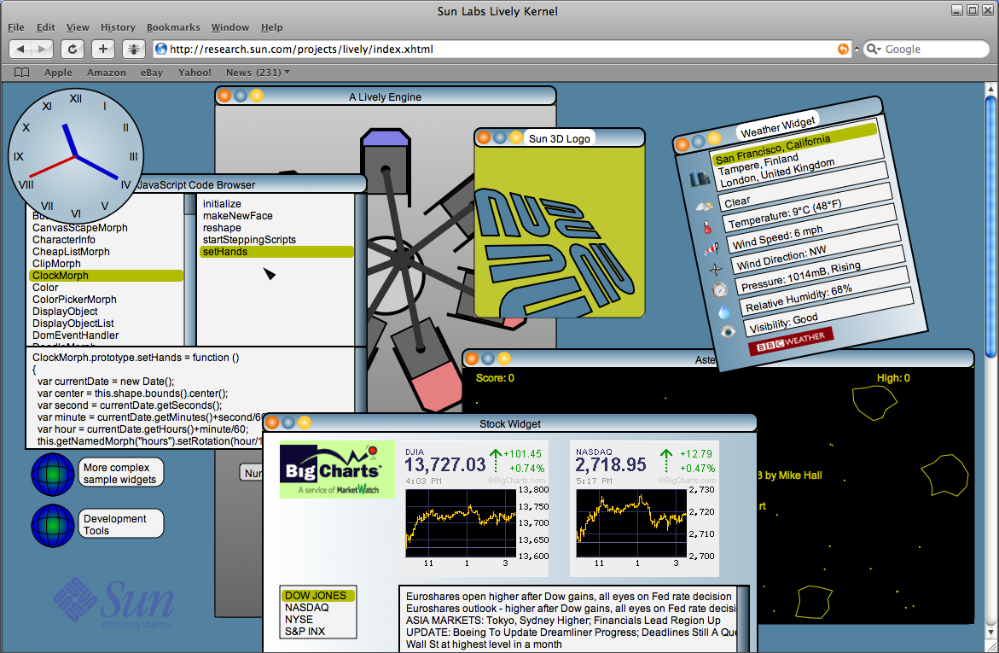

A key difference between JavaScript Live and other systems in the same area is our focus on uniformity. Our goal is to build a platform using a minimum number of underlying technologies. This is in contrast with many current web technologies that utilize a diverse array of technologies such as HTML, CSS, DOM, JavaScript, PHP, XML, and so on. In JavaScript Live we attempt to do as much as possible using a single technology: JavaScript. We have chosen JavaScript primarily because of its ubiquitous availability in the web browsers today and because of its syntactic similarity to other highly popular languages such as C, C++ and Java. However, we also want to leverage the dynamic aspects of JavaScript, especially the ability to modify applications at runtime. Such capabilities are an essential ingredient in building a malleable web programming environment that allows applications to be developed interactively and collaboratively.
JavaScript Live places a special emphasis on treating web applications as real applications, as opposed to the document-oriented nature of most web applications today. In general, we want to put programming into web development, as opposed to the current weaving of HTML and XML documents that is also sometimes referred to as programming.
The JavaScript Live system runs in an ordinary web browser. The system utilizes the JavaScript engine, graphics capabilities and asynchronous networking features that are already available in commercial web browsers today. In general, one of our goals has been to leverage existing technologies whenever possible.
A unique feature of the JavaScript Live system is a graphics library called Morphic. Morphic is a user interface framework that supports composable graphical objects, along with the machinery required to display and animate these objects, handle user inputs, and manage underlying system resources such as displays, fonts and color maps. A key goal of Morphic is to make it easy to construct and edit interactive graphical objects, both by direct manipulation and from within programs. The Morphic user interface framework was originally developed for the Self system at Sun Labs, but it became popular later also as part of the Squeak Smalltalk environment. JavaScript Live brings the flexibility and power of this user interface framework to web application development.
Click Begin Interactive Tutorial
to learn how to use JavaScript Live.
You can also Enter JavaScript Live
directly to try out the system yourself.
